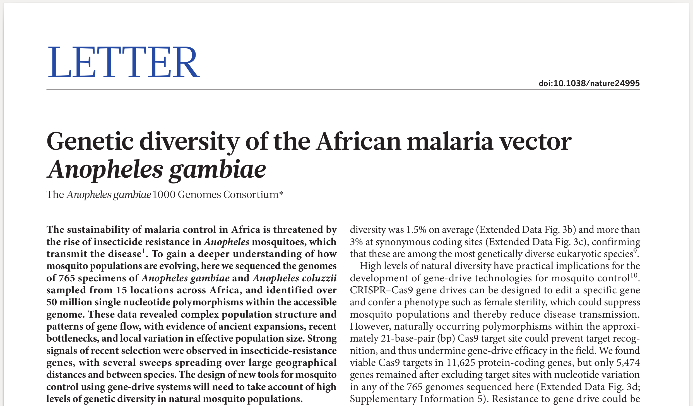
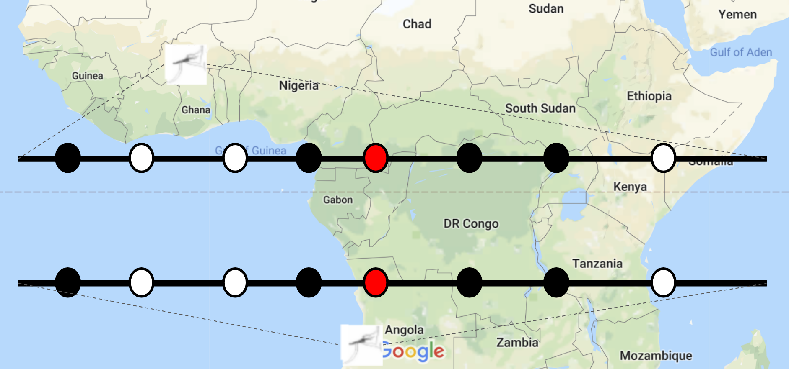
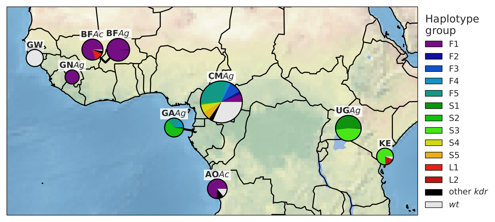
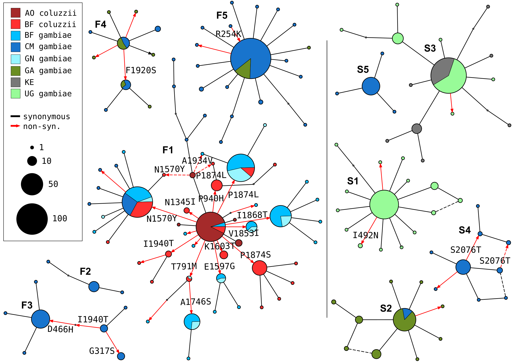

## Use cases for genomic surveillance of malaria vector populations
Pyrethroid resistance is widespread in primary African vector species.
How can surveillance improve insecticide resistance management (IRM)?
## Use case (1): Procurement and deployment of next-generation LLINs
* "Next-generation" LLINs available, e.g.:
* Olyset Plus: permethrin + PBO (P450 synergist)
* Olyset Duo: permethrin + pyriproxyfen (second insecticide)
* More expensive than standard LLINs
* How many to buy?
* Where to deploy them?
## Use case (2): IRS deployment strategy
* "Next-generation" IRS formulations available, e.g.:
* Actellic 300CS: pyrimiphos methyl (organophosphate)
* SumiShield 50WG: clothianidin (neonicotinoid)
* Fludora Fusion: deltamethrin + clothianidin
* Preemptive rotation?
* Geographical mosaic?
* Is it working?
## Use case (3): Cross-border coordination
* Can countries take decisions in isolation about how to manage insecticide resistance?
* When and where do decisions need to be coordinated across borders?
## The *Anopheles gambiae* 1000 Genomes Project (Ag1000G)
* A consortial project using whole-genome sequencing to investigate genetic variation and evolution in natural mosquito populations
* Create an open access data resource to accelerate research and surveillance
* [www.malariagen.net/ag1000g](http://www.malariagen.net/ag1000g)
Ag1000G Consortium
Wellcome Sanger Institute / University of Oxford / Liverpool School of Tropical Medicine / Sapienza University of Rome / University of California, Riverside / Liverpool John Moores University / Broad Institute / Institut de Recherche pour le Développement / Virginia Tech / KEMRI Wellcome Trust Research Programme / New Mexico State University / Universidade Nova de Lisboa / University of Minnesota / Université d’Abomey–Calavi, Benin / Indiana University / University of Notre Dame / Washington State University / Imperial College / University of Oregon / University of North Carolina at Chapel Hill / University of Montana / Institut Pasteur / Instituto Nacional de Saúde Pública, Guiné-Bissau / Centre International de Recherches Médicales de Franceville, Gabon / Programa Nacional de Controle da Malária, Angola / Institut de Recherche en Sciences de la Santé, Burkina Faso / University of Bamako, Mali / Infectious Diseases Research Collaboration, Uganda / Organisation de Coordination pour la lutte contre les Endémies en Afrique Centrale, Cameroon
## Ag1000G sequencing methods
* Sequence individual mosquitoes collected from the field
* Use whole-genome Illumina (Hi-Seq) sequencing
* Deep coverage (~30X)
* Sequencing performed at and funded by Wellcome Sanger Institute
## Ag1000G population sampling
* Aim for broad geographical coverage
* 18 countries, ~1 site per country
* *An. gambiae*, *An. coluzzii*, *An. arabiensis*
* Sequence >30 individuals per site per species
* Why 30? Statistical power to make inferences about populations (e.g., gene flow).
## Ag1000G data production
* Raw sequence reads →
* Alignment to reference genome →
* Variant calling →
* Variant filtering and annotation →
* Haplotype phasing →
* **Curated "analysis-ready" variant calls and haplotypes**
## Ag1000G data releases
* **Phase 1**: 765 mosquitoes; 8 countries; *An. gambiae*, *An. coluzzii*
* Data released 2016
* **Phase 2**: 1,142 mosquitoes; 13 countries; *An. gambiae*, *An. coluzzii*
* Data released 2017
* **Phase 3**: ~4,000 mosquitoes; 18 countries; *An. gambiae*, *An. coluzzii*, *An. arabiensis*
* Data in production
## Ag1000G further information
* www.malariagen.net/ag1000g
* @@TODO pubmed URL

## Pyrethroid target-site resistance
Spread of "knock-down resistance" (*kdr*) mutations in the voltage-gated sodium channel gene (*Vgsc*).
## *kdr* mutations
* Two known *kdr* mutations in *Vgsc* codon 1014
* L1014F found throughout West and Central Africa
* L1014S found throughout East and Central Africa
* Are these mutations spreading?
* Where is gene flow occurring?
## Inferring *kdr* gene flow
* Analyse the genetic backgrounds on which *kdr* mutations occur ("*kdr* haplotypes")
* Use all mutations within the *Vgsc* gene
* 1,710 biallelic SNPs (mostly intronic)
* Same *kdr* haplotype in two different locations:
* ⇒ gene flow
Inferring kdr gene flow

## *kdr* haplotypes
* Analysed data from Ag1000G phase 1 (765 mosquitoes, 8 countries)
* L1014F - 5 major haplotypes (F1-F5)
* L1014S - 5 major haplotypes (S1-S5)
kdr haplotypes

## *kdr* gene flow - further information
* @@TODO biorxiv URL
## Pyrethroid metabolic resistance
Spread of copy number variations in cytochrome P450 genes.
## Cytochrome P450 genes
* Known to metabolise pyrethroids
* Neutralised by PBO synergist in next-gen LLINs
* Multiple P450 genes in genome, e.g.:
* *Cyp6p/aa*
* *Cyp9k1*
* Increased expression ⇒ pyrethroid resistance
* Increased gene copy number ⇒ increased expression
## Detecting copy number variation
* Analyse depth of coverage to discover CNVs
@@TODO image
## P450 copy number variation
* Analysed data from Ag1000G phase 2 (1,142 mosquitoes, 13 countries)
* Gene amplifications at two P450 loci:
* *Cyp6p/aa*
* *Cyp9k1*
## Discussion
## Spread of resistance - open questions
* Geographical origins?
* Direction and routes of gene flow?
* Timing?
* Rate of movement?
## Next steps
* Scale up genome sequencing of vector populations
* Increase geographical coverage
* Regular (seasonal) sampling
* Other vector species (e.g., *An. funestus*)
## Acknowledgements
@@TODO Ag1000G Consortium Partners
## Extra slides
## Gene drive use cases
* Design of gene drive constructs - identification of ultra-conserved regions
* Modelling gene drive deployment and spread - estimating rates, ranges and routes of migration
* Monitoring gene drive in the field - is it spreading as expected, is resistance emerging?

## *Cyp9k1* CNVs
@@TODO image of CNV spans, give them names